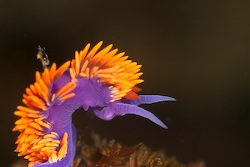
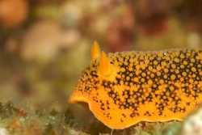

Channel Islands July 2007
Previous
4
5
6
7
8
9
Aboard the Vision

Channel Islands 2007-07-17 11-25-09
|
White-spotted Dorrid (Doriopsilla albopunctata)

Channel Islands 2007-07-17 11-28-41
|
Nobil Dorid (Peltodoris nobilis)